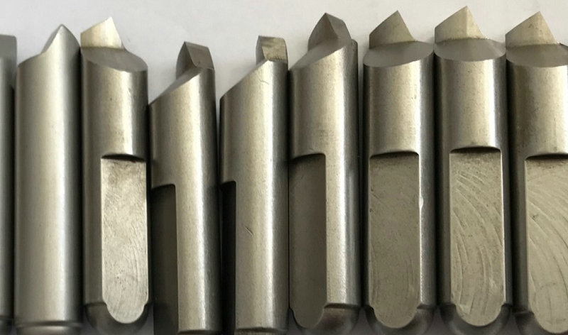
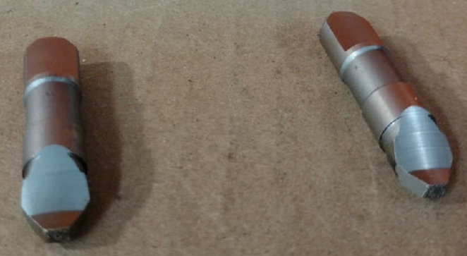

Rechtslauf-Mitnehmerbolzen für Stirnseitenmitnehmer – Ihr kompetenter Hersteller aus China!
Ob Sie als Maschinenbauer regelmäßig Rechtslauf-Mitnehmerbolzen in größeren Stückzahlen benötigen oder als Werkzeugnutzer einen Ersatz für einen verschlissenen Bolzen suchen – wir fertigen passgenau und wirtschaftlich. Dank unserer schlanken Produktionsstrukturen in China bieten wir ein exzellentes Preis-Leistungs-Verhältnis bei kurzen Lieferzeiten. Viele Kunden aus Deutschland, Österreich und der Schweiz vertrauen bereits auf unsere Präzision.


Bei vielen Dreh- und Schleifmaschinen arbeitet die Hauptspindel im Rechtslauf (im Uhrzeigersinn). Für diese Drehrichtung benötigt der Stirnseitenmitnehmer spezifische Mitnehmerbolzen, die den erforderlichen Formschluss sicherstellen, ohne zu wandern oder die Werkstückoberfläche zu beschädigen. Unsere Rechtslauf-Mitnehmerbolzen (auch als Mitnehmerbolzen für Rechtslauf oder Right‑hand drive pins bekannt) sind präzisionsgeschliffene, gehärtete Antriebselemente, die für eine zuverlässige Drehmomentübertragung im Uhrzeigersinn optimiert sind.
in der spanenden Fertigung ist die Wahl des richtigen Antriebselements entscheidend für Prozesssicherheit und Standzeit. Stirnseitenmitnehmer (Face Driver) haben sich als leistungsstarke Spannlösungen für die wirtschaftliche Bearbeitung von Wellen und rotationssymmetrischen Bauteilen etabliert. Ihr Herzstück – die Mitnehmerbolzen – müssen exakt auf die Drehrichtung der Maschinenspindel abgestimmt sein. Genau hier setzen wir an: Wir sind ein spezialisierter chinesischer Hersteller von Rechtslauf-Mitnehmerbolzen für Stirnseitenmitnehmer.


Senden Sie uns einfach Ihre Zeichnung oder eine detaillierte Beschreibung des benötigten Rechtslauf-Mitnehmerbolzens (Durchmesser, Länge, Härte, eventuelle Sondergeometrie). Wir prüfen die Machbarkeit und unterbreiten Ihnen innerhalb weniger Tage ein wettbewerbsfähiges Angebot. Muster sind in der Regel in ein bis zwei Wochen bei Ihnen.
Ein häufiger Fehler in der Praxis ist der Einsatz von Linkslauf-Bolzen in einer Rechtslauf-Anwendung. Das führt zu verminderter Kraftübertragung, erhöhtem Verschleiß und im schlimmsten Fall zum Lösen des Werkstücks. Wir kennzeichnen unsere Rechtslauf-Mitnehmerbolzen deshalb eindeutig (z. B. mit „R“ oder farblicher Markierung) und liefern selbstverständlich auch Linkslauf-Mitnehmerbolzen sowie umstellbare Bolzen (für beide Richtungen) auf Anfrage.
- Startseite
- Produkte
- Kontakt
- Exzentrische Mitnehmerbolzen
- halb versetzte Antriebsstifte
- Zentrische Mitnahmebolzen
- Standard-Mitnehmermesser
- abgefachte Mitnahmebolzen
- Rechtslauf Antriebszapfen
- Linkslauf-Mitnehmerstifte
- Mitnehmerbolzen mit voller Mitnahmebreite
- langlebige Mitnehmerbolzen
- Mitnehmerbolzen mit Meißelkante
- schwimmende Mitnehmer
- Kraftbetätigte Mitnehmerbolzen
- hydraulische Anschlussstifte
- mechanische Anschlussstifte
- bewegliche Mitnehmerbolzen
- feste Anschlussstifte
- Hartmetall Mitnahmebolzen
- Werkzeugstahl S7 Bolzen
- Wechselbare Mitnehmerbolzen
- Mitnehmerstift